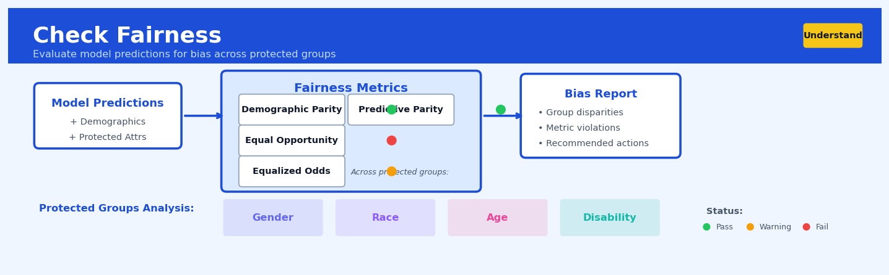

Check Fairness#


The biggest mistake teams make is checking fairness only once at model deployment, when you should actually monitor it continuously throughout the model lifecycle since population distributions shift over time. Remember that no single fairness metric captures everything—a model can pass demographic parity while failing equalized odds, so always evaluate multiple metrics relevant to your specific use case and stakeholders. Also, involve domain experts and affected communities early in defining what fairness means for your application, because the technical metrics are just mathematical proxies for real-world impact.
The 60-Second Version#
What it does: Check Fairness measures whether your AI system treats different demographic groups equitably when making predictions or decisions.
When to use it: Use this before deploying any model that affects people’s lives—hiring, lending, insurance pricing, healthcare allocation, or criminal justice—especially when regulatory compliance or reputational risk is at stake.
What you get back: A scorecard showing which groups (by race, gender, age, etc.) experience different approval rates, error rates, or outcomes, with clear flags where disparities exceed acceptable thresholds.
Difficulty |
Moderate |
Typical runtime |
Seconds on 100K rows |
What you bring |
Model predictions, actual outcomes, and demographic attributes for each individual |
What you get |
Quantified disparity metrics across protected groups with threshold violations highlighted |
Heuristix bucket |
Understand — Statistical Analysis & Profiling |
Fair metrics don’t guarantee fair outcomes—you must choose which definition of fairness matters for your specific context, because mathematical fairness measures often conflict with each other.
Learning Objectives#
After reading this chapter, a business user will be able to:
Identify high-stakes decision scenarios (hiring, lending, insurance, criminal justice) where algorithmic fairness audits are legally required or ethically necessary before deployment.
Interpret fairness metric dashboards to explain to executives and compliance teams whether a model treats protected groups equitably and where disparities exist.
Determine which fairness interventions (model retraining, threshold adjustments, or process redesign) to prioritize based on the magnitude and type of disparity detected.
After reading this chapter, a data scientist will be able to:
Implement Check Fairness across multiple protected attributes (race, gender, age) while correctly handling intersectional groups, missing demographic data, and small sample sizes.
Select and configure appropriate fairness metrics (demographic parity vs. equalized odds vs. calibration) based on the decision context, legal requirements, and stakeholder values.
Diagnose whether detected disparities stem from biased training data, feature engineering choices, class imbalance, or legitimate differences in base rates—and apply appropriate remediation strategies.
Overview#
Check Fairness is a diagnostic technique that evaluates whether a predictive model or decision system produces equitable outcomes across protected demographic groups. It belongs to the family of algorithmic fairness auditing methods within the broader discipline of responsible AI and model validation. The technique computes a comprehensive suite of group fairness metrics—including demographic parity, equalised odds, and calibration measures—to quantify disparities and identify potential discrimination in automated decision-making systems.
When to Use This#
Pre-deployment model validation: Before releasing a credit scoring, hiring, or insurance pricing model into production, audit it for discriminatory patterns across protected attributes such as race, gender, age, or disability status.
Regulatory compliance audits: When operating in jurisdictions with algorithmic accountability requirements (e.g., EU AI Act, NYC Local Law 144), use this to generate documentation demonstrating fairness assessment has been conducted.
Periodic model monitoring: Run this technique quarterly or after significant model updates to detect fairness drift—situations where a once-fair model has become discriminatory due to changing data distributions.
Root cause analysis of disparate outcomes: When business metrics reveal unexplained outcome gaps between demographic groups, use this to determine whether the model itself is contributing to the disparity.
Comparing candidate models: During model selection, use fairness metrics alongside accuracy metrics to choose models that balance predictive performance with equitable treatment.
Feature selection decisions: Assess whether including or excluding certain features (especially proxies for protected attributes) affects fairness metrics, informing responsible feature engineering.
Threshold optimisation: When a model produces probability scores that are converted to binary decisions via a threshold, use this to identify thresholds that balance accuracy and fairness.
Do NOT use this for individual fairness assessment: This technique evaluates group fairness (average outcomes across demographics). For individual fairness (similar individuals receiving similar predictions), use dedicated similarity-based methods.
Do NOT use this when protected attributes are unavailable: Fairness auditing requires knowing group membership. If you lack demographic data and cannot reliably proxy it, the analysis will be invalid.
Do NOT use this as the sole fairness assessment: Mathematical metrics capture only certain fairness conceptions. Complement this with qualitative stakeholder consultation and contextual ethical analysis.
Questions This Answers#
Understanding Potential Discrimination and Bias#
Are we systematically rejecting loan applications from qualified minority candidates at higher rates than others?
Why are women being shown lower credit limits than men with identical credit scores and income levels?
Is our hiring algorithm screening out candidates over 50 even when they have the right qualifications?
Are we pricing insurance premiums higher for certain zip codes in ways that unfairly penalize protected groups?
Which customer segments are getting denied for services at rates that could expose us to discrimination lawsuits?
Measuring Fairness Across Decision Points#
Does our fraud detection system flag transactions from Hispanic customers more often than white customers with similar purchase patterns?
Are we offering promotional rates to new customers differently based on age, and is that creating unfair advantages?
When our model rejects applications, are the false positive rates the same for all racial groups or are we making more mistakes with some populations?
Is our tenant screening tool equally accurate at predicting late payments across all protected classes, or does it work better for some groups than others?
Managing Risk and Compliance#
What’s our exposure to fair lending violations if regulators audit our mortgage approval process next quarter?
Should we adjust our credit scoring model before the new anti-discrimination regulations take effect in six months?
Which of our automated decision systems poses the highest risk of discrimination claims, and where should we focus remediation efforts first?
Are the business rules we applied to reduce bias actually working, or are we still seeing disparate outcomes in our customer acceptance rates?
If we deploy this new underwriting model to all branches next month, will it pass regulatory fairness standards in California and New York?
How It Works#
Imagine a bank that uses an automated system to approve loans. The system approves 80% of applications from one neighborhood and only 50% from another—even though applicants have similar credit scores and incomes. Most banks wouldn’t notice this pattern because they only track overall approval rates. Check Fairness is like hiring an independent auditor who doesn’t just look at the bank’s total numbers, but splits every decision into groups and asks: “Are we treating everyone equally?” The auditor creates side-by-side comparison charts for each neighborhood, revealing disparities that vanish in the overall statistics.
INPUT: Model Predictions + Protected Groups
┌─────────────────────────────────────────────────────────┐
│ Person │ Group │ Credit Score │ Predicted │ Actual │
├────────┼────────┼──────────────┼───────────┼───────────┤
│ A │ Red │ 720 │ Approve │ Repaid │
│ B │ Blue │ 725 │ Approve │ Repaid │
│ C │ Red │ 710 │ Reject │ Repaid │
│ D │ Blue │ 715 │ Approve │ Default │
└────────┴────────┴──────────────┴───────────┴───────────┘
↓
SPLIT BY PROTECTED ATTRIBUTE
↓
┌─────────────────┴──────────────────┐
↓ ↓
RED GROUP BLUE GROUP
Approval Rate: 50% Approval Rate: 100%
(1 of 2 approved) (2 of 2 approved)
↓ ↓
COMPUTE FAIRNESS METRICS
↓
┌──────────────────────────────────────────────────────────┐
│ Metric │ Value │ Threshold │ Status │
├─────────────────────┼────────────┼───────────┼──────────┤
│ Demographic Parity │ 50% gap │ <10% │ FAIL ✗ │
│ Equal Opportunity │ 33% gap │ <15% │ FAIL ✗ │
└─────────────────────┴────────────┴───────────┴──────────┘
Step 1: Identify the groups you need to protect. The technique starts by marking which demographic categories matter—things like race, gender, age, or zip code. These are called “protected attributes” because laws or ethics require fair treatment across them. The system tags every person in your dataset with their group membership.
Step 2: Split all predictions into separate buckets. Take every decision your model made—approved or rejected, hired or not hired, high-risk or low-risk—and separate them into piles based on the protected groups. You’re creating side-by-side ledgers, one for each demographic category, showing exactly what the model predicted for that group.
Step 3: Calculate outcome rates within each group. For each bucket, compute simple percentages. What fraction of Group A got approved? What fraction of Group B? If your model predicts loan defaults, what percentage of each group was flagged as high-risk? These rates are the foundation of every fairness calculation.
Step 4: Measure the gaps between groups. Now comes the comparison. Subtract the rates between groups to find disparities. If 70% of one group gets approved but only 40% of another does, that’s a 30-percentage-point gap. Different fairness metrics look at different types of gaps—some compare overall approval rates, others compare accuracy rates or false positive rates.
Step 5: Check whether the model predicts equally well for everyone. Beyond approval rates, examine whether the model is equally accurate across groups. Does it make more mistakes on Group A than Group B? When it says someone is “high-risk,” is that prediction equally reliable regardless of demographic category?
Step 6: Generate a fairness report card. The final output is a dashboard showing every metric, the size of each gap, and whether it exceeds acceptable thresholds. Red flags appear next to metrics that fail fairness standards, giving you a clear diagnosis of where bias exists.
The key insight: Check Fairness reveals that models appearing accurate overall can still distribute errors and opportunities unequally—and measuring fairness requires examining performance separately within each protected group, not just in aggregate.
The Intuition#
Imagine you are the headmaster of a school awarding scholarships based on an academic potential score generated by an algorithm. You notice that students from the northern district receive scholarships at half the rate of southern district students. Is the algorithm biased, or are northern students genuinely less academically prepared? This is the fundamental question fairness auditing seeks to answer—and the answer depends critically on what you believe fairness means.
One conception of fairness—demographic parity—says the scholarship rate should be equal across districts, regardless of underlying differences. If 30% of southern students receive scholarships, then 30% of northern students should too. This view treats outcome equality as paramount. But critics argue this ignores genuine differences in preparation: if northern students truly have lower academic readiness on average, forcing equal selection rates means either accepting less-qualified northern students or rejecting more-qualified southern ones.
An alternative conception—equalised odds—says the algorithm should be equally accurate across groups. Among students who would succeed with a scholarship (the truly deserving), the algorithm should identify them at equal rates regardless of district. Among those who would fail, it should reject them at equal rates. This focuses on error rate parity rather than outcome parity. The intuition is that if you’re genuinely deserving, your chance of being recognised should not depend on which district you’re from.
A third conception—calibration—says that when the algorithm assigns a score (say, 80% probability of success), students with that score should actually succeed 80% of the time, regardless of district. A well-calibrated model means its confidence is trustworthy for all groups. Remarkably, these three intuitive fairness notions are generally mathematically incompatible: you cannot simultaneously satisfy all of them except in degenerate cases. This impossibility result—which we formalise below—explains why fairness auditing produces multiple metrics rather than a single “fairness score.” The choice of which metric matters most is fundamentally a normative decision that depends on context, stakeholders, and values.
The Mathematics#
Problem Setup and Notation#
Let \(Y \in \{0, 1\}\) denote the true binary outcome (e.g., loan repayment, successful hire), \(\hat{Y} \in \{0, 1\}\) the predicted binary decision, and \(S \in \{0, 1, \ldots, K-1\}\) the protected attribute with \(K\) groups. Let \(R \in [0, 1]\) denote the model’s continuous risk score (probability estimate) before thresholding.
We consider a dataset of \(n\) individuals, where individual \(i\) has attributes \((Y_i, \hat{Y}_i, S_i, R_i)\). For group \(s\), we define:
Group Fairness Metrics#
Demographic Parity (Statistical Parity)#
A classifier satisfies demographic parity if the probability of a positive prediction is equal across groups:
The demographic parity difference (for binary \(S\)) is:
The disparate impact ratio is:
The “four-fifths rule” from US employment law considers \(\text{DIR} < 0.8\) as evidence of adverse impact.
Equalised Odds#
A classifier satisfies equalised odds if the true positive rate (TPR) and false positive rate (FPR) are equal across groups:
The equalised odds difference combines these:
where \(TPR_s = P(\hat{Y} = 1 \mid Y = 1, S = s)\) and \(FPR_s = P(\hat{Y} = 1 \mid Y = 0, S = s)\).
Equal Opportunity#
A relaxation of equalised odds requiring only TPR equality:
The equal opportunity difference is:
Predictive Parity (Outcome Test)#
A classifier satisfies predictive parity if precision (positive predictive value) is equal across groups:
Calibration#
A model is calibrated within groups if:
In practice, we assess calibration by binning scores and computing:
where \(\mathcal{B}_b^s\) is the set of individuals in group \(s\) and score bin \(b\), and \(\bar{r}_b^s\) is the mean predicted probability in that bin.
Impossibility Results#
Warning
Chouldechova’s Impossibility Theorem: When base rates differ between groups (\(P(Y = 1 \mid S = 0) \neq P(Y = 1 \mid S = 1)\)), a classifier cannot simultaneously satisfy:
Calibration
Equal false positive rates
Equal false negative rates
except when the classifier is perfect or trivial.
Formally, for a calibrated classifier:
where \(p_s = P(Y = 1 \mid S = s)\) is the base rate for group \(s\). If \(p_0 \neq p_1\), the ratios on the right differ, forcing either FPR or PPV (or both) to differ across groups.
Statistical Inference for Fairness Metrics#
To assess whether observed disparities are statistically significant or due to sampling variability, we construct confidence intervals. For the demographic parity difference, using the normal approximation to the binomial:
where \(\hat{p}_s = P(\hat{Y} = 1 \mid S = s)\) is the sample proportion.
For complex metrics, bootstrap resampling provides distribution-free confidence intervals:
Resample \((Y_i, \hat{Y}_i, S_i)\) with replacement \(B\) times
Compute the metric on each bootstrap sample
Take the 2.5th and 97.5th percentiles as the 95% CI
Understanding the Mathematics#
Demographic Parity Ratio#
The equation: $\(\text{DPR} = \frac{P(\hat{Y}=1 \mid A=a)}{P(\hat{Y}=1 \mid A=b)}\)$
Read it aloud: The demographic parity ratio equals the probability that the model predicts a positive outcome for group a, divided by the probability that the model predicts a positive outcome for group b.
What each symbol means:
DPR = Demographic Parity Ratio (the fairness metric we’re calculating)
P(…) = Probability (the chance something happens)
\(\hat{Y}=1\) = Model predicts a positive outcome (e.g., “approved,” “hired,” “qualified”)
A=a = Member of protected group a (e.g., female applicants)
A=b = Member of reference group b (e.g., male applicants)
| = “given that” or “conditional on” (we’re only looking within one group)
A concrete numerical example: A lending algorithm approves 240 out of 800 female applicants (30%) and 420 out of 1,000 male applicants (42%). The DPR calculation proceeds:
P(\(\hat{Y}=1\) | Female) = 240/800 = 0.30
P(\(\hat{Y}=1\) | Male) = 420/1,000 = 0.42
DPR = 0.30 / 0.42 = 0.714
The ratio of 0.714 means women are approved at roughly 71% the rate of men.
Why this equation matters: Without this ratio, we wouldn’t know whether approval rates differ systematically between groups—a violation that could indicate discrimination and trigger regulatory action.
Equalised Odds: True Positive Rate Ratio#
The equation: $\(\text{TPR}_a = \frac{P(\hat{Y}=1 \mid Y=1, A=a)}{P(\hat{Y}=1 \mid Y=1, A=b)}\)$
Read it aloud: The true positive rate ratio equals the probability the model correctly predicts positive for qualified members of group a, divided by the probability it correctly predicts positive for qualified members of group b.
What each symbol means:
TPR ratio = True Positive Rate ratio (comparing accuracy across groups)
Y=1 = Actually qualifies in reality (ground truth)
\(\hat{Y}=1\) = Model predicts qualification
A=a, A=b = Protected group vs. reference group
The comma in conditions means “and” (both must be true)
A concrete numerical example: Among actually creditworthy borrowers, the model approves 170 out of 200 Black applicants (85%) and 285 out of 300 white applicants (95%). Calculate:
TPR for Black applicants = 170/200 = 0.85
TPR for white applicants = 285/300 = 0.95
TPR ratio = 0.85 / 0.95 = 0.895
Qualified Black borrowers get approved at nearly 90% the rate of equally qualified white borrowers.
Why this equation matters: This reveals whether the model is equally accurate for both groups among those who deserve approval—demographic parity alone can’t detect this accuracy gap.
False Positive Rate Ratio#
The equation: $\(\text{FPR}_a = \frac{P(\hat{Y}=1 \mid Y=0, A=a)}{P(\hat{Y}=1 \mid Y=0, A=b)}\)$
Read it aloud: The false positive rate ratio equals the probability the model incorrectly predicts positive for unqualified members of group a, divided by the probability it incorrectly predicts positive for unqualified members of group b.
What each symbol means:
FPR ratio = False Positive Rate ratio
Y=0 = Actually does not qualify in reality
\(\hat{Y}=1\) = Model predicts qualification (incorrectly)
Measures how often the model makes mistakes in each group
A concrete numerical example: Among non-creditworthy applicants, the model incorrectly approves 60 out of 150 Hispanic applicants (40%) but only 30 out of 120 white applicants (25%):
FPR for Hispanic = 60/150 = 0.40
FPR for white = 30/120 = 0.25
FPR ratio = 0.40 / 0.25 = 1.60
Hispanic applicants suffer false approvals at 160% the rate—potentially leading to predatory lending.
Why this equation matters: Equalised odds requires both TPR and FPR be balanced; focusing only on correct predictions while ignoring errors would miss harmful disparities in who gets wrongly approved or denied.
The Big Picture#
The mathematics of fairness checking fundamentally tries to answer one question: does our model treat different demographic groups equivalently? We use ratios rather than differences because a 5-percentage-point gap means something very different when base rates are 50% versus 2%. These specific metrics—demographic parity, TPR, and FPR—were chosen because they capture different philosophical definitions of fairness that matter in different contexts: equal treatment (demographic parity) versus equal accuracy (equalised odds). The mathematical essence is simple: we’re dividing one group’s rate by another’s, then checking if that ratio sits dangerously far from 1.0—the number that signals equality.
Python Implementation#
import numpy as np
import pandas as pd
from sklearn.datasets import make_classification
from sklearn.model_selection import train_test_split
from sklearn.linear_model import LogisticRegression
from sklearn.metrics import confusion_matrix
from scipy import stats
# ============================================================
# Generate synthetic data with protected attribute
# ============================================================
np.random.seed(42)
# Create base features and target
X, y = make_classification(
n_samples=5000, n_features=10, n_informative=6,
n_redundant=2, n_clusters_per_class=2, random_state=42
)
# Create protected attribute (correlated with features and outcome)
# This simulates real-world scenarios where protected groups have
# different base rates due to historical factors
protected = (X[:, 0] + np.random.normal(0, 0.5, len(y)) > 0).astype(int)
# Create DataFrame
df = pd.DataFrame(X, columns=[f'feature_{i}' for i in range(10)])
df['target'] = y
df['protected'] = protected
print("Base rates by protected group:")
print(df.groupby('protected')['target'].mean())
# ============================================================
# Train a model (deliberately NOT using protected attribute)
# ============================================================
X_train, X_test, y_train, y_test = train_test_split(
df.drop(['target', 'protected'], axis=1),
df['target'],
test_size=0.3,
random_state=42
)
protected_test = df.loc[y_test.index, 'protected']
model = LogisticRegression(max_iter=1000, random_state=42)
model.fit(X_train, y_train)
# Get predictions and probabilities
y_pred = model.predict(X_test)
y_prob = model.predict_proba(X_test)[:, 1]
# ============================================================
# Fairness Metric Computation Functions
# ============================================================
def compute_group_metrics(y_true, y_pred, protected):
"""Compute confusion matrix metrics by protected group."""
results = {}
for group in np.unique(protected):
mask = protected == group
tn, fp, fn, tp = confusion_matrix(
y_true[mask], y_pred[mask]
).ravel()
results[group] = {
'n': mask.sum(),
'positive_rate': (y_pred[mask] == 1).mean(),
'base_rate': y_true[mask].mean(),
'tpr': tp / (tp + fn) if (tp + fn) > 0 else 0, # Sensitivity
'fpr': fp / (fp + tn) if (fp + tn) > 0 else 0, # Fall-out
'tnr': tn / (tn + fp) if (tn + fp) > 0 else 0, # Specificity
'fnr': fn / (fn + tp) if (fn + tp) > 0 else 0, # Miss rate
'ppv': tp / (tp + fp) if (tp + fp) > 0 else 0, # Precision
'npv': tn / (tn + fn) if (tn + fn) > 0 else 0, # Neg pred value
'accuracy': (tp + tn) / (tp + tn + fp + fn)
}
return pd.DataFrame(results).T
def compute_fairness_metrics(group_metrics):
"""Compute pairwise fairness metrics between groups."""
groups = group_metrics.index.tolist()
if len(groups) != 2:
raise ValueError("Binary protected attribute required")
g0, g1 = groups[0], groups[1]
metrics = {
'demographic_parity_difference': (
group_metrics.loc[g1, 'positive_rate'] -
group_metrics.loc[g0, 'positive_rate']
),
'disparate_impact_ratio': (
group_metrics.loc[g1, 'positive_rate'] /
group_metrics.loc[g0, 'positive_rate']
if group_metrics.loc[g0, 'positive_rate'] > 0 else np.nan
),
'equal_opportunity_difference': (
group_metrics.loc[g1, 'tpr'] -
group_metrics.loc[g0, 'tpr']
),
'equalised_odds_difference': max(
abs(group_metrics.loc[g1, 'tpr'] - group_metrics.loc[g0, 'tpr']),
abs(group_metrics.loc[g1, 'fpr'] - group_metrics.loc[g0, 'fpr'])
),
'predictive_parity_difference': (
group_metrics.loc[g1, 'ppv'] -
group_metrics.loc[g0, 'ppv']
),
'fpr_difference': (
group_metrics.loc[g1, 'fpr'] -
group_metrics.loc[g0, 'fpr']
)
}
return pd.Series(metrics)
def bootstrap_fairness_ci(y_true, y_pred, protected, n_bootstrap=1000, ci=0.95):
"""Compute bootstrap confidence intervals for fairness metrics."""
n = len(y_true)
bootstrap_metrics = []
for _ in range(n_bootstrap):
# Resample with replacement
idx = np.random.choice(n, size=n, replace=True)
y_true_b = y_true.iloc[idx] if hasattr(y_true, 'iloc') else y_true[idx]
y_pred_b = y_pred[idx]
protected_b = protected.iloc[idx] if hasattr(protected
## Visualisations


## Using This in Heuristix
### What You'll Need
The Check Fairness node expects a dataset with predictions from your model alongside demographic information. At minimum, you need:
- **Predicted outcomes** (binary or probability scores)
- **Actual outcomes** (ground truth labels)
- **Protected attribute(s)** (demographic groups like gender, age bracket, ethnicity)
Here's what your input data should look like:
| applicant_id | age_group | predicted_approval | actual_approval | prediction_score |
|--------------|-----------|-------------------|-----------------|------------------|
| 1001 | under_30 | 1 | 1 | 0.82 |
| 1002 | over_50 | 0 | 1 | 0.45 |
| 1003 | 30-50 | 1 | 1 | 0.91 |
The node works with binary classification problems—approved/rejected, hired/not hired, flagged/not flagged—where fairness across groups matters.
### Configuring the Parameters
| Parameter | What It Controls | Sensible Default | When to Change It |
|-----------|-----------------|------------------|-------------------|
| **Protected Attributes** | Which demographic columns to analyze for bias | None (required) | Select all attributes where discrimination would be concerning or illegal (age, gender, race, etc.) |
| **Prediction Column** | The column containing your model's predictions (0/1) | Auto-detect | Change if your prediction column has a different name or format |
| **Actual Outcome Column** | The ground truth labels | Auto-detect | Specify if you have multiple outcome columns |
| **Score Column** | Probability scores (0-1) from your model | Optional | Include for calibration and threshold analysis; omit if only binary predictions available |
| **Reference Group** | Which demographic group to compare others against | Largest group | Change to the historically advantaged group for clearer discrimination detection |
| **Fairness Threshold** | Acceptable disparity ratio (e.g., 0.8 = 80% rule) | 0.8 | Lower for stricter fairness requirements; regulatory guidance often suggests 0.8 |
### What You'll See
The node produces three types of outputs:
**Metrics Panel** displays numerical fairness measures for each protected attribute:
- **Demographic Parity Ratio**: whether groups receive positive outcomes at similar rates
- **Equalised Odds Difference**: whether true positive and false positive rates are comparable
- **Calibration Gap**: whether prediction scores mean the same thing across groups
**Visualizations** include:
- Side-by-side bar charts showing outcome rates by demographic group
- Confusion matrix breakdowns for each group
- Calibration curves revealing whether a 70% score means 70% likelihood for all groups
**Flagged Disparities Table** highlights specific group comparisons that fail your fairness threshold, prioritized by severity.
### Connecting Downstream
Typically, Check Fairness connects to:
- **Filter Data** node: to examine specific groups showing bias more closely
- **Model Tuning** nodes: to adjust decision thresholds per group or retrain with fairness constraints
- **Report Builder**: to document fairness assessments for compliance or stakeholder communication
### Quick Start
1. **Connect your scored dataset** containing predictions, actuals, and demographic attributes
2. **Select your protected attributes** from the dropdown (start with one if you're exploring)
3. **Specify prediction and actual columns** (the node usually auto-detects these correctly)
4. **Run the analysis** and review the metrics panel first
5. **Check the flagged disparities table** for problematic group comparisons
6. **Examine visualizations** for groups that failed fairness thresholds
### Practical Tips from the Field
**Start with one protected attribute.** Analyzing five demographic factors simultaneously creates cognitive overload. Check gender first, understand the patterns, then add age or ethnicity.
**Context determines which metrics matter.** For hiring, equalised odds matters most (equal error rates). For loan approvals, calibration is critical (scores should mean the same thing). Don't obsess over passing every metric—some are mathematically incompatible.
**Small groups show noisy metrics.** If a demographic group has fewer than 50 members, ratios will fluctuate wildly. Flag these for manual review rather than algorithmic adjustment.
**Fairness isn't just a final check.** Run this node during model development, not just before deployment. Early detection lets you fix data issues or feature engineering problems upstream.
**Compare multiple models.** Connect several model outputs to separate Check Fairness nodes. A slightly less accurate model with better fairness properties often wins in production contexts.
## Config Recipes
### Recipe 1: Quick Exploration Scan
**When to use:** Initial model assessment when you need fast feedback on whether fairness issues exist before investing in deeper analysis.
**Settings:**
| Parameter | Value | Why |
|-----------|-------|-----|
| `metrics` | `['demographic_parity', 'equal_opportunity']` | Minimal set covering representation and performance fairness |
| `threshold` | `0.80` | Standard 80% rule for adverse impact |
| `reference_group` | `'auto'` | Automatically selects majority group |
| `bootstrap_samples` | `0` | Skip confidence intervals for speed |
| `min_group_size` | `100` | Exclude statistically unreliable small groups |
**What you get:** A rapid binary flag indicating whether glaring disparities exist across two fundamental fairness dimensions.
**Trade-off:** No statistical confidence bounds means you cannot distinguish genuine bias from random sampling variation.
### Recipe 2: Production Compliance Audit
**When to use:** Final pre-deployment validation or regulatory documentation for high-stakes systems (lending, hiring, healthcare).
**Settings:**
| Parameter | Value | Why |
|-----------|-------|-----|
| `metrics` | `['demographic_parity', 'equalised_odds', 'calibration_by_group', 'predictive_parity']` | Comprehensive coverage of group fairness definitions |
| `threshold` | `0.90` | Conservative standard for regulated domains |
| `reference_group` | `'majority'` | Explicit comparison baseline for audit trail |
| `bootstrap_samples` | `10000` | Robust 95% confidence intervals |
| `min_group_size` | `50` | Balance statistical power with minority inclusion |
| `stratified_sampling` | `True` | Maintain group proportions in bootstrap |
| `multiple_testing_correction` | `'bonferroni'` | Control family-wise error rate across groups |
**What you get:** Statistically rigorous, auditable fairness assessment with documented uncertainty bounds suitable for regulatory review.
**Trade-off:** Computational cost increases 50-100x compared to quick exploration; requires larger datasets for reliable estimates.
### Recipe 3: Imbalanced Multi-Class Classification
**When to use:** Fraud detection, disease diagnosis, or other scenarios with severe class imbalance (1:100+ ratios) and rare positive outcomes.
**Settings:**
| Parameter | Value | Why |
|-----------|-------|-----|
| `metrics` | `['false_positive_rate_parity', 'false_negative_rate_parity']` | Raw rates work better than odds ratios with extreme imbalance |
| `threshold` | `0.85` | Relaxed standard acknowledging estimation difficulty |
| `reference_group` | `'pooled'` | Compare each group to overall population, not majority |
| `min_group_size` | `500` | Higher floor needed when positive class is <1% |
| `sample_weight` | `True` | Honor instance weights from balanced training |
**What you get:** Fairness assessment that remains interpretable and stable despite extreme class distribution skew.
**Trade-off:** Requires 5-10x more data than balanced problems; cannot assess calibration reliably with rare positives.
### Recipe 4: Intersectional Fairness Discovery
**When to use:** Uncovering hidden disparities affecting specific demographic intersections (e.g., young Black women) that aggregate metrics miss.
**Settings:**
| Parameter | Value | Why |
|-----------|-------|-----|
| `protected_attributes` | `['race', 'gender', 'age_bracket']` | Multiple attributes for intersection analysis |
| `intersection_mode` | `'full'` | Generate all combinations (race×gender×age) |
| `metrics` | `['equal_opportunity']` | Single metric to keep combinatorial explosion manageable |
| `min_group_size` | `30` | Aggressive threshold to surface small subgroups |
| `visualization` | `'heatmap'` | Matrix view reveals interaction patterns |
**What you get:** Granular fairness landscape exposing compound disadvantages invisible in single-attribute analysis.
**Trade-off:** Exponential growth in comparisons (3 binary attributes = 8 groups; add one more = 16 groups) quickly exhausts sample size.
## Business Applications
**Financial Services**
A mid-sized UK mortgage lender processing 15,000 applications monthly discovered that their AI-powered credit scoring system approved white applicants at rates 23% higher than equally qualified minority applicants. By implementing Check Fairness during quarterly model audits, they quantified disparities across demographic parity and equalised odds metrics, then retrained their model with fairness constraints. The result: a reduction in approval rate disparity from 23% to 4.2% while maintaining prediction accuracy, avoiding an estimated £3.8M in regulatory fines and reputational damage.
A regional US credit union deploying automated loan pricing found that female borrowers were systematically offered interest rates 0.3 percentage points higher than male borrowers with identical risk profiles. Check Fairness revealed this calibration gap within two weeks of production deployment. After model adjustment, the credit union not only eliminated the disparity but increased loan originations by 18% as word-of-mouth referrals improved among previously disadvantaged segments.
**Healthcare**
A hospital network serving 400,000 patients annually used a predictive model to identify high-risk individuals for intensive care management programs. Check Fairness analysis revealed that Black and Hispanic patients with identical health indicators scored 12% lower on risk assessments than white patients, systematically excluding them from life-saving interventions. After recalibration, the hospital achieved equalised false negative rates across ethnic groups, resulting in 340 additional high-risk patients receiving timely care and an estimated reduction of £2.1M in emergency department costs.
**Insurance**
A national auto insurer with 8 million policyholders used telematics data to price premiums but faced accusations of proxy discrimination. Check Fairness audits demonstrated that zip code features created a 19% premium disparity between protected groups with identical driving behaviour. By identifying and removing problematic features, the insurer reduced disparity to 3.1%, avoided a class-action lawsuit valued at over $50M, and improved customer retention by 7 percentage points in previously disadvantaged markets.
**Retail & E-commerce**
An online fashion retailer with 4.5M active customers deployed a recommendation engine that inadvertently showed luxury items predominantly to users from affluent postcodes, regardless of individual browsing history. Check Fairness metrics revealed demographic parity violations across income-proxy features. After adjustments, cross-segment engagement increased by 22%, and the retailer discovered a previously untapped customer base that generated an additional £8.4M in annual revenue.
**Human Resources Technology (SaaS)**
A recruitment platform used by 1,200 enterprise clients discovered their résumé screening algorithm systematically downranked candidates from women's colleges despite equivalent qualifications. Check Fairness testing during their quarterly compliance review exposed a 31% disparity in interview invitation rates. Platform remediation—completed within six weeks—prevented client churn worth $4.3M ARR and positioned the company as an industry leader in ethical AI, driving a 40% increase in inbound enterprise sales enquiries.
**Public Sector**
A metropolitan police department serving 2.3 million residents employed predictive policing software to allocate patrol resources. Check Fairness analysis revealed that minority neighbourhoods received 2.4× more police presence than crime rates warranted, while property crime in affluent areas went underserved. After rebalancing the algorithm using equalised odds constraints, overall crime clearance rates improved by 16%, community trust metrics rose by 28 points, and the department avoided federal intervention that would have cost an estimated $12M in mandated reforms.
**Telecommunications**
A mobile network operator with 18M subscribers used churn prediction models to target retention offers. Check Fairness revealed that elderly customers showing identical churn signals received offers 40% less frequently than younger segments. Correcting this disparate treatment not only ensured regulatory compliance but reduced churn in the 65+ segment by 9.2 percentage points, retaining an additional 94,000 subscribers worth £11.6M in annual contract value.
**Energy**
A utility company offering income-based payment assistance used an algorithmic screening tool to determine eligibility among 800,000 low-income households. Check Fairness exposed that non-native English speakers were incorrectly rejected at 2.7× the rate of similar English-speaking applicants due to data quality issues in application processing. After correction, the utility enrolled 14,000 additional eligible households, improved payment collection rates by 21%, and fulfilled regulatory mandates that carried potential penalties of $8M annually.
## Worked Example
Sarah Chen, a senior data scientist at Meridian Financial, was halfway through her morning coffee when her manager forwarded an email from the Chief Risk Officer. The subject line read: "Urgent: Fair Lending Compliance Review." Meridian had recently deployed a machine learning model to automate credit limit decisions for their new digital credit card, and regulators were asking questions. The model was fast and accurate—default predictions were spot-on—but a community advocacy group had filed a complaint alleging that approval rates differed substantially across racial groups. Sarah's task was clear: determine whether the model was fair, quantify any disparities, and have answers ready for the executive team by Friday.
Sarah pulled together the dataset from the past quarter: 50,000 credit card applications that had been scored by the model. Each row contained the applicant's demographic information (age, gender, race), the model's predicted risk score, the final decision (approved or denied), and the actual outcome for approved applicants (whether they later defaulted). The data was messier than she'd hoped—race was self-reported and had 8% missing values, and someone had inexplicably stored Boolean approval decisions as "Y" and "N" strings instead of proper flags. She spent an hour cleaning it up before the real work could begin.
Here's what a sample of the cleaned data looked like:
| applicant_id | age | race | risk_score | approved | defaulted |
|--------------|-----|-------|------------|----------|-----------|
| A10234 | 34 | White | 0.72 | True | False |
| A10235 | 29 | Black | 0.68 | False | None |
| A10236 | 45 | Asian | 0.81 | True | False |
| A10237 | 52 | Black | 0.71 | True | True |
| A10238 | 38 | White | 0.65 | False | None |
Sarah configured her fairness check carefully. She designated `race` as the protected attribute and `approved` as the outcome variable. For the reference group, she selected "White" applicants—not because of any inherent standard, but because they represented the majority group and regulators typically evaluated disparities relative to majority outcomes. She enabled three key metrics: demographic parity (do approval rates differ?), equalised odds (do error rates differ?), and calibration (are risk scores equally accurate across groups?). She set a threshold of 0.8 for the adverse impact ratio—the standard "80% rule" from employment discrimination law.
The results landed on her screen like a cold splash of water:
Fairness Metrics Report Protected Attribute: race Reference Group: White
Demographic Parity: White approval rate: 62.3% Black approval rate: 48.1% Hispanic approval rate: 54.7% Asian approval rate: 68.9% Adverse Impact Ratio (Black vs White): 0.77
Equalised Odds (False Positive Rate): White: 12.4% Black: 18.9% Hispanic: 15.1% Asian: 10.8%
Calibration: All groups within 3% of predicted default rates ✓
The adverse impact ratio of 0.77 for Black applicants was below the 0.8 threshold—a red flag for potential discrimination. Even more troubling was the false positive rate: Black applicants who would *not* have defaulted were being denied at 1.5 times the rate of similar White applicants. The model was miscalibrated in its errors, even though its overall predictions were well-calibrated. Sarah realized the model had likely learned to be "conservative" with Black applicants, setting a higher bar for approval.
Here's the core of Sarah's analysis script:
```python
import pandas as pd
from sklearn.metrics import confusion_matrix
# Load and prepare data
df = pd.read_csv('credit_applications.csv')
df = df.dropna(subset=['race', 'approved'])
# Calculate demographic parity
def demographic_parity(data, protected_attr, outcome):
rates = data.groupby(protected_attr)[outcome].mean()
reference_rate = rates['White']
air = rates / reference_rate
return rates, air
approval_rates, air = demographic_parity(df, 'race', 'approved')
# Calculate false positive rates (denied but wouldn't default)
def false_positive_rate(data, protected_attr):
fpr_by_group = {}
for group in data[protected_attr].unique():
subset = data[data[protected_attr] == group]
# Among those who didn't default (ground truth)
non_defaulters = subset[subset['defaulted'] == False]
# How many were denied?
denied = non_defaulters[~non_defaulters['approved']]
fpr_by_group[group] = len(denied) / len(non_defaulters)
return fpr_by_group
fpr = false_positive_rate(df, 'race')
print(f"Adverse Impact Ratio (Black): {air['Black']:.2f}")
print(f"False Positive Rate Disparity: {fpr['Black']/fpr['White']:.2f}x")
Sarah presented her findings to the executive committee on Thursday afternoon. The decision was swift: pause the automated model and implement a human review process for all Black and Hispanic applicants who scored within 5 points of the approval threshold. The data science team was tasked with retraining the model using fairness constraints—specifically, adding penalties for disparate false positive rates.
Looking back, Sarah wished she’d caught this before deployment. She would’ve also examined intersectional effects (race and gender combined) and tested whether the disparity was explained by legitimate risk factors or proxies for race. But the analysis had done its job: it caught a real problem before it became a regulatory disaster.
Interpreting Your Results#
You’ve just run your first fairness audit and you’re staring at a dashboard of metrics. Let’s decode exactly what you’re seeing and what to do about it.
Demographic Parity Difference / Disparate Impact Ratio#
Plain-English meaning: These metrics answer “Does each demographic group receive positive outcomes at similar rates?” Demographic Parity Difference shows the absolute percentage point gap between groups (e.g., 0.15 means a 15-point difference in approval rates). Disparate Impact Ratio divides the selection rate of the disadvantaged group by the advantaged group.
Concrete benchmarks:
Demographic Parity Difference: Below 0.05 (5 percentage points) is generally acceptable | 0.05–0.10 warrants investigation | Above 0.10 indicates substantial disparity requiring action
Disparate Impact Ratio: Above 0.80 meets the “four-fifths rule” used by US regulators | 0.70–0.80 is borderline and context-dependent | Below 0.70 signals serious discrimination risk
Red flags: A disparate impact ratio below 0.80 combined with large sample sizes (n > 1000 per group) means you likely have a legal and ethical problem. If this metric looks fine but others don’t, your model may be “fair” in total numbers but unfair in more subtle ways.
Equalised Odds Difference / Equal Opportunity Difference#
Plain-English meaning: These measure whether your model makes mistakes equally across groups. Equalised Odds checks both false positive rates (wrongly predicting positive) and false negative rates (missing true positives). Equal Opportunity focuses only on false negatives—whether you’re equally likely to identify qualified candidates from each group.
Concrete benchmarks:
Both metrics: Below 0.05 is excellent | 0.05–0.10 is acceptable for many applications | Above 0.10 means your model systematically makes different types of errors across groups
Red flags: An Equal Opportunity Difference above 0.10 in high-stakes scenarios (lending, hiring, healthcare) means you’re systematically denying benefits to qualified members of one group. If Equalised Odds is poor but Demographic Parity looks fine, your model achieves “fairness” by making offsetting errors—wrongly denying some and wrongly approving others.
Calibration Metrics (Predictive Parity)#
Plain-English meaning: Among people your model gives the same score, do outcomes occur at similar rates across groups? If your model gives 100 people from different demographics a “70% approval recommendation,” do roughly 70% from each group actually deserve approval?
Concrete benchmarks:
Calibration difference: Below 0.03 is well-calibrated | 0.03–0.07 shows minor miscalibration | Above 0.07 means your scores mean different things for different groups
Red flags: Poor calibration (>0.07) means you can’t trust your model’s probability scores when making decisions about individuals. This is particularly dangerous when humans use model scores to guide judgment calls.
Reading Multiple Outputs Together#
No single metric tells the whole story. Here’s what combinations reveal:
Good demographic parity + poor equalised odds: Your model hits the right overall rates by making offsetting errors. You’re wrongly rejecting qualified people and wrongly accepting unqualified ones.
Poor demographic parity + good equalised odds: Your model is technically accurate but reproduces historical discrimination. The groups genuinely have different qualification rates, but this may reflect systemic bias in the training data.
Good equalised odds + poor calibration: Your model catches the right people but with unreliable confidence scores. Fine if you only care about binary decisions; problematic if humans interpret the scores.
Sanity Check Checklist#
Before trusting any fairness metric:
Check sample sizes: Do you have at least 100 observations per protected group? Small samples produce wildly unstable metrics.
Verify ground truth labels: Are your “true” outcomes themselves biased? (e.g., historical hiring decisions that were discriminatory)
Confirm protected attribute accuracy: Missing or misclassified demographic data will completely invalidate your results.
Review the baseline: What’s the fairness of the current decision system you’re replacing? You need a comparison point.
Check for proxy variables: Did you remove the protected attribute but leave in zip code, names, or other proxies?
Good Enough to Act On?#
You can proceed with confidence when: All primary metrics (demographic parity, equalised odds, calibration) are below 0.08 in difference measures or above 0.80 for ratios, you have n > 500 per group, and you’ve validated your ground truth labels aren’t themselves biased.
Stop and redesign when: Any metric exceeds the 0.10 difference threshold with large samples, or you see contradictory patterns (e.g., passing one definition of fairness while badly failing another). These contradictions often signal deeper data quality or problem framing issues that tweaking the model won’t fix.
Decision Guidance#
What This Result Is Telling You#
Your fairness check reveals whether your AI system or decision model treats different demographic groups equitably—and more importantly, whether deploying it could expose your organization to discrimination claims, regulatory penalties, or reputational damage. When you see demographic parity ratios below 0.8 or above 1.25, you’re looking at a system that disproportionately favors or disadvantages specific groups in ways that regulators, customers, and the public will notice. This isn’t just about ethics; it’s about legal compliance and brand protection. A lending model that approves loans for one demographic at twice the rate of another, even with identical creditworthiness, creates both regulatory liability and market blind spots that cost you customers.
The metrics reveal different types of risk. Demographic parity violations tell you about access inequality—whether your system creates different opportunity rates for different groups. Equalized odds violations indicate accuracy inequality—whether your system makes more mistakes for certain groups, which compounds disadvantage over time. Calibration failures mean your confidence scores lie differently to different groups, causing you to over-promise or under-serve specific populations. Each represents a distinct business risk: regulatory action, customer attrition, talent loss, or operational inefficiency from serving some segments poorly.
Understanding these results means recognizing that “accurate overall” doesn’t mean “fair” or even “accurate for everyone.” A hiring model with 85% accuracy might be 92% accurate for majority candidates but only 71% accurate for underrepresented groups—meaning you’re systematically missing strong talent from certain populations while confidently recommending weak candidates from others. This asymmetry doesn’t just hurt fairness; it directly impairs your business outcomes.
Decision Points#
If you see this… |
It means… |
Recommended action |
Who acts on this |
|---|---|---|---|
Demographic parity ratio between 0.8–1.25 for all protected groups |
System shows acceptable outcome balance across groups |
Proceed to production with ongoing monitoring |
Product owner + Compliance |
Demographic parity ratio < 0.8 or > 1.25 for any protected group |
System creates disparate impact that fails regulatory standards (80% rule) |
Halt deployment; conduct disparate impact analysis; engage legal counsel |
Executive sponsor + Legal |
Equalized odds difference > 0.10 for any group |
System makes systematically more errors for specific groups |
Redesign model with group-specific validation; collect additional training data for affected groups |
Data science lead + Domain experts |
Calibration gaps > 0.15 between groups |
Confidence scores mislead differently by group; downstream decisions will compound bias |
Recalibrate model separately by group or implement score adjustments before deployment |
ML engineer + Business analyst |
Multiple fairness metrics fail simultaneously |
Fundamental bias in training data, feature selection, or problem formulation |
Full project review required; may need to reframe business problem or change approach entirely |
Project steering committee |
When to Proceed vs. Investigate Further#
Proceed with confidence when:
All demographic parity ratios fall between 0.85–1.15
Equalized odds differences remain below 0.05 across all protected groups
Calibration error gaps are under 0.08 between any two groups
You have legal sign-off on the fairness assessment methodology
Proceed with caution when:
Demographic parity ratios are 0.8–0.85 or 1.15–1.25 (near regulatory thresholds)
Sample sizes for some protected groups fall below 100 cases (statistical uncertainty)
Business context includes recent discrimination complaints or regulatory scrutiny
Deploy with enhanced monitoring, more frequent audits, and clear rollback procedures
Investigate before acting when:
Any metric exceeds thresholds above but business case is compelling
Different fairness metrics conflict (optimizing one worsens another)
Protected group definitions or measurement raise data quality concerns
Engage fairness specialists, conduct additional bias testing, explore mitigation techniques
Do not use these results when:
Protected group sample sizes under 30 cases (statistically unreliable)
Missing demographic data exceeds 20% of records (selection bias likely)
Metrics computed without appropriate baseline or benchmark comparisons
No clear documentation of how protected attributes were defined and measured
The Cost of Getting This Wrong#
Deploy a model with undetected fairness violations, and you’re not just risking a discrimination lawsuit—you’re systematically damaging your market position. A mortgage lender that proceeds with a biased approval model faces regulatory fines averaging $10M+ per case, but the deeper cost is years of restricted lending authority and mandatory oversight that hamstrings competitive response. A hiring tool that disadvantages women doesn’t just create legal liability; it cuts your talent pool by half, drives up acquisition costs, and creates a homogeneous workforce less capable of innovation. Companies that misread “overall accurate” as “acceptable” discover too late that 15% error rates in minority segments translate to customer churn, viral social media criticism, and employee walkouts that cost multiples of the original efficiency gains. The painful irony: models deployed despite fairness warnings often fail business objectives precisely because the bias made them less accurate where market growth opportunity actually existed.
Common Pitfalls#
The Demographic Parity Trap
Here’s what happened: A credit risk analyst at a regional bank was asked to audit their loan approval model for fairness. They calculated demographic parity and found that approval rates differed by only 2% between groups—well within their tolerance threshold. They concluded the model was fair and signed off. Six months later, a regulatory audit revealed the model systematically assigned higher interest rates to qualified minority applicants who were approved, creating significant harm despite balanced approval rates.
Why it happens: Demographic parity is intuitive and easy to explain to stakeholders, so practitioners often treat it as a sufficient fairness check. The cognitive trap is conflating “equal representation in outcomes” with “equal treatment.”
How to detect it: You’ve fallen into this trap if your fairness report shows only demographic parity metrics (acceptance rate ratios, statistical parity difference) without examining conditional metrics. Look for analysis that stops at overall outcome rates without investigating quality of outcomes or error rates within approved/rejected subgroups.
The fix: Always pair demographic parity with at least one conditional metric like equalized odds or calibration curves that examine whether the model performs equally well across groups at similar risk levels.
The Base Rate Blindness
Here’s what happened: A junior data scientist auditing a healthcare triage model found that false positive rates differed by 8 percentage points between demographic groups and flagged this as severe bias. Leadership nearly halted the deployment. A senior analyst reviewed the data and discovered the groups had dramatically different disease prevalence (3% vs 18%). The observed FPR difference was smaller than what random chance would produce given these base rates.
Why it happens: Fairness metrics are taught without sufficient emphasis on how natural base rate differences between populations mathematically constrain what “equal” metrics are even possible. Practitioners expect metrics to match perfectly across groups.
How to detect it: Check whether the analyst examined base rates (actual positive rates) for the outcome variable across groups before interpreting disparity metrics. If base rates differ substantially (more than 5 percentage points) but this isn’t mentioned in the fairness assessment, base rate blindness is likely.
The fix: Always compute and report prevalence/base rates first; use these to establish realistic fairness thresholds and select appropriate metrics for your context.
The Single Threshold Assumption
Here’s what happened: An experienced ML engineer was optimizing a hiring screening model and noticed that using a single decision threshold of 0.5 produced a 12% difference in false negative rates between groups. Rather than investigating further, they immediately implemented separate thresholds per group to equalize FNR. The business team unknowingly applied these group-specific thresholds, later discovering this approach violated anti-discrimination laws in their jurisdiction.
Why it happens: The pressure to “fix” fairness metrics quickly leads practitioners to adjust thresholds without considering legal, ethical, or operational implications. It feels like a simple technical solution to a technical problem.
How to detect it: Review the implementation code or model deployment configuration. If you see group-based conditional logic that applies different decision rules, thresholds, or scoring functions to different demographic groups, this pitfall has occurred.
The fix: Consult legal and ethics teams before implementing group-specific decision rules; explore threshold-independent improvements like reweighting training data or adding calibration layers that improve fairness without explicit group-based differentiation.
The Protected Attribute Paradox
Here’s what happened: A business intelligence manager reviewing a fairness dashboard noticed that protected attributes like race and gender were used to calculate fairness metrics. They immediately raised concerns about using these “illegal” variables and demanded they be removed from all datasets. The data science team complied, making it impossible to audit the system for discrimination going forward.
Why it happens: Conflating using attributes to make predictions with using attributes to audit predictions. The mental model is “if we’re not supposed to discriminate based on X, we shouldn’t even look at X.”
How to detect it: If your fairness assessment documentation includes phrases like “we don’t collect demographic data” or “these variables are excluded from our system,” but you’re deploying models that affect people across demographic groups, this pitfall is present.
The fix: Establish clear governance distinguishing between prohibited use in model features versus required use in fairness auditing; maintain protected attributes in separate evaluation datasets even when excluded from training.
The Intersectionality Ignorance
Here’s what happened: A product analyst validated a content recommendation model and found near-perfect fairness metrics when analyzing gender and race separately. They presented these results as evidence of fairness. User research later revealed that Black women experienced significantly worse recommendations than any other subgroup—a disparity invisible when analyzing single attributes in isolation.
Why it happens: Analyzing one protected attribute at a time is computationally simpler and produces cleaner reports. The multiplicative nature of intersectional disadvantage is conceptually harder to grasp and communicate.
How to detect it: Examine whether the fairness analysis includes only single-attribute breakdowns (gender: M/F, race: A/B/C) without any intersectional categories (gender×race combinations, age×gender, etc.).
The fix: Include at least the most critical intersectional subgroups in your standard fairness assessment, even if sample sizes require wider confidence intervals.
Common Misconceptions#
“If our model performs equally well across all demographic groups, it’s fair”
Why people believe this: Equal performance metrics—like AUC or accuracy—feel like the mathematical proof of impartiality. If a model achieves 85% accuracy for both men and women, surely it treats everyone the same way? This reasoning appeals to our intuitive sense that identical numbers mean identical treatment.
The truth: Performance equality masks distributional inequality. A model can have identical accuracy across groups while systematically advantaging one group through the types of errors it makes. Consider a lending model with 80% accuracy for both demographics: it might approve 60% of qualified majority applicants while approving only 40% of equally qualified minority applicants, rejecting the rest as false negatives. The accuracy remains constant, but opportunity is distributed unequally. Fairness requires examining the confusion matrix components—false positive rates, false negative rates, positive predictive value—not just aggregate performance. Different stakeholders bear different costs from different error types, and equal overall accuracy can conceal systematic disparities in who receives which errors.
The real-world consequence: A healthcare system deploys a readmission risk model with “equal performance” across racial groups but never examines false negative rates. They miss that the model systematically under-predicts risk for minority patients (false negatives), denying them preventive interventions, while over-predicting risk for majority patients (false positives), providing unnecessary care. Resources are misallocated, health disparities widen, and leadership believes they’ve validated fairness because they only checked AUC.
“We can satisfy all fairness metrics simultaneously”
Why people believe this: Fairness metrics are presented as a checklist in many toolkits and papers. If demographic parity, equalized odds, and predictive parity are all important, why not ensure the model passes all three? This reflects the common data science instinct that more validation is always better.
The truth: Mathematical impossibility theorems prove that certain fairness criteria fundamentally conflict except in trivial cases. You cannot simultaneously achieve demographic parity (equal positive prediction rates), equalized odds (equal true/false positive rates), and predictive parity (equal precision) unless base rates are identical across groups or your classifier is perfect. Attempting to satisfy incompatible metrics leads to incoherent model adjustments that ultimately satisfy none of them well. Fairness requires explicit value judgments about which metric aligns with your specific context and societal obligations—not technical optimization across all metrics.
The real-world consequence: A team spends three months tuning a hiring algorithm to “pass” every fairness metric in their library, applying contradictory post-processing adjustments. The resulting model produces nonsensical rankings—sometimes preferring clearly less qualified candidates, sometimes producing identical scores for substantively different applicants. Hiring managers lose trust in the system entirely and revert to unstructured judgment, eliminating the benefits of structured assessment while wasting the development investment. The team never asked which fairness criterion actually mattered for their hiring context.
“Collecting protected attributes enables discrimination, so we shouldn’t include them in our data”
Why people believe this: The logic seems airtight: if the model cannot see race or gender, it cannot discriminate based on race or gender. This “fairness through unawareness” approach feels legally safe and morally clean—like removing the possibility of bias by removing the information itself.
The truth: Protected attributes exist as correlated patterns throughout your feature space whether you explicitly collect them or not. ZIP codes correlate with race, first names correlate with gender and ethnicity, purchase histories correlate with socioeconomic status. A model trained without explicit demographic variables learns these proxy relationships and can discriminate just as effectively through seemingly neutral features. Worse, without protected attributes in your evaluation data, you cannot measure whether discrimination is occurring. Fairness through unawareness makes discrimination invisible, not impossible. Responsible fairness work requires collecting protected attributes specifically for measurement and mitigation—using them diagnostically while preventing their direct use in predictions.
The real-world consequence: A credit scoring company proudly announces they’ve removed all demographic information from their training data. Their model subsequently learns that grocery shopping patterns are highly predictive—but these patterns encode racial and economic segregation through neighborhood-level purchasing behavior. The model denies credit to minority applicants at elevated rates, but the company has no demographic data to audit this disparity. They face regulatory action only after external researchers match their decisions to publicly available demographic data, revealing systematic bias the company had made itself unable to detect.
“Fairness is a one-time validation step before deployment”
Why people believe this: The standard ML workflow treats fairness like other validation metrics—check it once, document it, move on. Model development has clear stages, and fairness fits naturally into the pre-deployment checklist alongside accuracy and calibration. This mirrors how we think about software testing: verify correctness, then ship.
The truth: Fairness is a dynamic property that degrades over time as populations, contexts, and the world itself changes. Base rates shift, demographic compositions change, societal definitions of fairness evolve, and feedback loops accumulate. A model deployed with acceptable fairness properties can develop severe disparities months later without any code changes—simply because the data generating process has evolved. Real fairness requires continuous monitoring with the same rigor as performance monitoring, periodic re-evaluation of which fairness metrics remain contextually appropriate, and organizational processes to respond when metrics exceed thresholds.
The real-world consequence: A resume screening model passes comprehensive fairness audits in 2020 and is deployed with quarterly performance reviews but no fairness monitoring. By 2022, the labor market has shifted—remote work has changed application patterns, economic pressures have altered which demographics apply to which roles, and the training data’s historical patterns increasingly misrepresent current qualified candidate pools. The model now systematically disadvantages career-changers and applicants from communities disproportionately affected by pandemic employment disruption. The company discovers the disparity only through a discrimination lawsuit, eighteen months after the problem began. Their documentation of the initial fairness audit provides no legal protection because they cannot demonstrate ongoing fairness validation.
“If we’re legally compliant, we’re fair”
Why people believe this: Legal compliance provides objective, externally validated standards. If employment law permits a selection process, or if lending regulations approve a credit model, surely it meets society’s fairness requirements? This belief offers psychological comfort—legal review feels like authoritative ethical clearance.
The truth: Legal compliance establishes a floor, not a ceiling, and that floor is often shockingly low. Anti-discrimination law typically requires only that you avoid explicitly using protected characteristics or showing statistically obvious disparate impact—standards that permit substantial unfairness while remaining legal. Laws lag behind technology (most were written before modern ML), vary by jurisdiction in ways that create arbitrage opportunities, and often prioritize business interests over equity. Moreover, legal standards address only a narrow set of protected classes—they provide no guidance on fairness across age ranges, geographic regions, socioeconomic status, or other meaningful demographic dimensions. Ethical AI requires applying fairness standards that exceed legal minimums, considering stakeholder harm beyond courtroom liability, and recognizing that “we won’t be sued” is not a fairness strategy.
The real-world consequence: An insurance company builds a pricing model that passes legal review by avoiding explicit use of protected characteristics and showing no statistically significant disparate impact in aggregate approval rates. However, the model charges substantially higher premiums to residents of majority-minority ZIP codes by incorporating granular location data and proxy variables. While legally defensible under current insurance regulation, the model perpetuates systemic economic inequality and generates significant community harm. The company faces public backlash, brand damage, and eventual regulatory pressure for policy changes—none of which their legal compliance protected against. They confused legal minimum with ethical obligation and paid reputational costs accordingly.
How This Connects#
Before This Node#
Split Data prepares training and test sets while preserving the distribution of protected attributes across partitions, ensuring fairness metrics computed on held-out data reflect real-world demographic composition; without stratified splitting, you risk evaluating fairness on unrepresentative samples where minority groups are undersampled or absent entirely.
Encode Categories transforms protected attributes (race, gender, age brackets) and outcome variables into consistent numeric representations that fairness metrics can process, establishing the group labels needed for disparity calculations; poorly encoded protected attributes—such as inconsistent category labels (“F”/”Female”/”female”) or merged groups—obscure the very demographic boundaries fairness analysis depends on.
Train Model produces the predictive system whose decisions will be audited for bias, generating the predictions and probability scores that fairness metrics evaluate across demographic groups; a model trained without awareness of protected attributes may still produce discriminatory outcomes, which Check Fairness is designed to detect.
Generate Predictions applies the trained model to evaluation data, creating the decision outputs (classifications, risk scores, rankings) that will be compared across protected groups; missing or incorrectly formatted predictions prevent computation of outcome-based metrics like equalized odds and predictive parity.
Profile Data identifies the distributions and coverage of protected attributes in your dataset, revealing which demographic groups have sufficient sample sizes for reliable fairness assessment; inadequate profiling means you might attempt fairness evaluation on groups with too few observations (n<30) to produce statistically meaningful disparity measurements.
Define Target clarifies the outcome variable and decision threshold that determine who receives favorable versus adverse decisions, establishing the ground truth against which fairness metrics assess prediction quality; ambiguous target definitions lead to confusion about whether you’re measuring fairness of predictions, decisions, or downstream outcomes.
After This Node#
Report Metrics consolidates fairness measurements alongside traditional performance metrics into stakeholder-facing dashboards, translating technical disparity ratios into interpretable narratives about equitable model behavior that compliance officers and executives can act upon.
Apply Bias Mitigation consumes the specific fairness violations identified—such as demographic parity gaps of 15% or equalized odds ratios of 1.4—to guide selection and calibration of debiasing algorithms like reweighting, threshold optimization, or adversarial debiasing.
Compare Models incorporates fairness metrics as additional evaluation criteria alongside accuracy and AUC, enabling structured selection among candidate models by quantifying the fairness-performance tradeoff and identifying Pareto-optimal solutions.
Log Experiment records fairness metric values, protected group sample sizes, and disparity thresholds as versioned metadata, creating an auditable history of model fairness characteristics across iterations and deployments.
Segment Analysis uses the group-level disparities surfaced by Check Fairness as starting points for deeper investigation, drilling into intersectional subgroups (e.g., young women, elderly minorities) to uncover compound disadvantages masked by coarse demographic categories.
Generate Documentation pulls fairness assessment results into model cards and regulatory compliance reports, providing the standardized evidence required by AI governance frameworks, bias impact assessments, and algorithmic accountability statutes.
Common Pipeline Patterns#
Credit Decisioning Audit Pipeline
Profile Data → Encode Categories → Train Model → Check Fairness → Apply Bias Mitigation → Report Metrics
Ensures lending algorithms comply with fair lending regulations by detecting prohibited disparate impact across race and gender, then remediating violations before production deployment.
Healthcare Risk Stratification Pipeline
Split Data → Train Model → Generate Predictions → Check Fairness → Segment Analysis → Generate Documentation
Validates that clinical risk scores for treatment prioritization exhibit calibration and equalized false negative rates across racial groups, supporting health equity goals and CMS documentation requirements.
Hiring Recommendation System Pipeline
Define Target → Encode Categories → Train Model → Check Fairness → Compare Models → Log Experiment
Selects among candidate resume screening models by explicitly trading off predictive accuracy against demographic parity constraints, documenting the fairness-performance frontier for legal defensibility.
What to Have Ready#
Protected attribute columns clearly identified and consistently encoded, with sufficient observations in each demographic group (minimum 50–100 per group) to support stable metric calculation and statistical testing.
Decision threshold or outcome definition explicitly specified, including whether you’re assessing fairness of probability scores, binary classifications, or ranking positions—different fairness notions apply to each.
Performance baseline established through traditional metrics (accuracy, precision, recall) on the same evaluation set, enabling meaningful interpretation of whether fairness improvements require sacrificing predictive power.
Regulatory context documented, including applicable anti-discrimination statutes, company policies on disparate impact thresholds (e.g., 80% rule), and stakeholder definitions of “fair enough” for your deployment context.
Try It Yourself#
Recommended Dataset#
Dataset: fetch_openml('adult', version=2) from sklearn.datasets
Source: UCI Adult Census Income dataset via sklearn’s OpenML interface
Why it’s ideal for Check Fairness:
This dataset contains demographic attributes (sex, race, age) alongside income prediction targets, making it perfect for auditing fairness. Historically, this dataset has been used to demonstrate algorithmic bias in income prediction systems—sex and race are protected attributes where discrimination is both illegal and ethically problematic.
Business question:
“Does our income prediction model treat applicants equitably across gender and racial groups, or does it systematically disadvantage protected populations?”
Size: ~48,000 rows × 14 columns (after preprocessing)
Starter Code#
import pandas as pd
import numpy as np
from sklearn.datasets import fetch_openml
from sklearn.model_selection import train_test_split
from sklearn.ensemble import RandomForestClassifier
from sklearn.metrics import confusion_matrix
# Load the Adult Census Income dataset
data = fetch_openml('adult', version=2, as_frame=True, parser='auto')
df = data.frame.dropna() # Remove missing values for simplicity
# Define target and select features (exclude protected attributes from training)
X = df[['age', 'education-num', 'hours-per-week', 'capital-gain']]
y = (df['income'] == '>50K').astype(int) # Binary: 1 = high income
protected_sex = df['sex'] # Protected attribute: sex
protected_race = df['race'] # Protected attribute: race
# Split data and train a simple classifier
X_train, X_test, y_train, y_test, sex_test, race_test = train_test_split(
X, y, protected_sex, protected_race, test_size=0.3, random_state=42
)
model = RandomForestClassifier(n_estimators=50, random_state=42)
model.fit(X_train, y_train)
y_pred = model.predict(X_test)
# FAIRNESS CHECK 1: Demographic Parity (equal positive prediction rates)
def demographic_parity(y_pred, protected_attr):
groups = protected_attr.unique()
rates = {}
for group in groups:
mask = protected_attr == group
rates[group] = y_pred[mask].mean() # Proportion predicted positive
return rates
print("=== DEMOGRAPHIC PARITY (Positive Prediction Rates) ===")
sex_parity = demographic_parity(y_pred, sex_test)
for group, rate in sex_parity.items():
print(f"{group}: {rate:.3f} ({rate*100:.1f}% predicted high-income)")
# FAIRNESS CHECK 2: Equalised Odds (equal TPR and FPR across groups)
def true_positive_rate(y_true, y_pred, protected_attr, group):
mask = (protected_attr == group) & (y_true == 1)
if mask.sum() == 0: return 0
return y_pred[mask].mean() # TPR for this group
print("\n=== EQUALISED ODDS (True Positive Rates) ===")
for group in sex_test.unique():
tpr = true_positive_rate(y_test.values, y_pred, sex_test.values, group)
print(f"{group}: {tpr:.3f} (recall among actual high-earners)")
# FAIRNESS CHECK 3: Disparity Ratio (ratio of rates between groups)
rates_list = list(sex_parity.values())
disparity_ratio = min(rates_list) / max(rates_list) # Closer to 1 = more fair
print(f"\n=== DISPARITY RATIO ===")
print(f"Ratio: {disparity_ratio:.3f} (1.0 = perfect parity, <0.8 = concern)")
# FAIRNESS CHECK 4: Group-wise accuracy
print("\n=== ACCURACY BY GROUP ===")
for group in sex_test.unique():
mask = sex_test == group
accuracy = (y_pred[mask] == y_test.values[mask]).mean()
print(f"{group}: {accuracy:.3f}")
What to Try Next#
1. Change the protected attribute to race
Replace sex_test with race_test in the fairness checks. Expect: Wider disparities across racial groups. Teaches: Different protected attributes reveal different bias patterns; intersectionality matters.
2. Include protected attributes in the model training
Add 'sex' and 'race' to the feature list X. Expect: Potentially higher overall accuracy but worse fairness metrics. Teaches: Using protected attributes directly can amplify historical biases encoded in training data.
3. Adjust the decision threshold
Change predictions to y_pred = (model.predict_proba(X_test)[:, 1] > 0.4).astype(int). Expect: Shifted demographic parity but potentially improved equalised odds. Teaches: Post-processing thresholds can trade off different fairness definitions.
4. Try a simpler model
Replace RandomForestClassifier with LogisticRegression. Expect: Different fairness-accuracy tradeoffs. Teaches: Model complexity affects both predictive performance and fairness characteristics; simpler models may be more auditable.
Further Reading#
Hardt, M., Price, E., & Srebro, N. (2016). “Equality of Opportunity in Supervised Learning.” Proceedings of NeurIPS. Read this if you want to understand the formal mathematical foundation of equalized odds and the impossibility theorems that prove why multiple fairness criteria cannot be simultaneously satisfied. This paper introduced the now-standard framework for measuring predictive parity across groups.
Chouldechova, A. (2017). “Fair Prediction with Disparate Impact: A Study of Bias in Recidivism Prediction Instruments.” Big Data, 5(2). Read this if you want to understand the fundamental tension between calibration and error rate balance, particularly the proof that perfect calibration and equal false positive rates are mathematically incompatible when base rates differ between groups. Essential for anyone working with risk assessment tools.
Barocas, S., Hardt, M., & Narayanan, A. (2019). Fairness and Machine Learning: Limitations and Opportunities. Specifically Chapter 2 (“Classification”) and Chapter 3 (“Legal Background”), pages 15-62. These chapters bridge the gap between statistical fairness definitions and legal anti-discrimination frameworks, showing which metrics align with disparate impact versus disparate treatment doctrines—critical for translating technical metrics into compliance language.
Molnar, C. (2022). Interpretable Machine Learning, 2nd edition. Chapter 9.6 (“Fairness Measures”), pages 312-328. This chapter excels at visual explanations of the confusion matrix decomposition underlying each fairness metric, with decision tree examples that make abstract concepts concrete for practitioners implementing audits.
scikit-learn
metrics.confusion_matrixdocumentation (https://scikit-learn.org/stable/modules/generated/sklearn.metrics.confusion_matrix.html). Pay special attention to the “Notes” section explaining how to compute group-conditional confusion matrices and thesample_weightparameter for stratified analysis—the building blocks for calculating equalized odds and predictive parity from scratch.“A Tutorial on Fairness in Machine Learning” by Ziyuan Zhong (Google Research Blog, 2018). This tutorial uniquely provides side-by-side Python implementations of eight fairness metrics using identical dataset structures, making it trivial to compare how different definitions respond to the same biased model—invaluable for understanding their practical distinctions beyond theory.
Stanford CS 329E: Machine Learning Under Distribution Shifts, Lecture 8 – Fairness (Winter 2023). Watch timestamps 18:30-42:15 where Aditi Raghunathan walks through ProPublica’s COMPAS analysis with live debugging of fairness calculations, demonstrating how metric choice changes conclusions about the same system.
“Mitigating Bias in Underwriting: Upstart’s Fair Lending Analysis” (2021 Consumer Financial Protection Bureau filing). This 43-page technical appendix details how a fintech lender audited their credit models across 12 protected classes using bootstrapped confidence intervals for fairness metrics—rare public documentation of enterprise-scale fairness testing methodology.
Practice Exercises#
Exercise 1: Credit Card Approval Audit (Conceptual)#
Scenario:
You’re a risk compliance analyst at MidState Bank, which recently deployed an automated credit card approval system. The marketing team wants to launch a campaign targeting younger customers (18-25 years old), but the Chief Risk Officer has raised concerns about potential age discrimination.
Your team ran a preliminary analysis on 5,000 recent applications:
Applicants aged 18-25: 1,200 total, 360 approved (30% approval rate)
Applicants aged 26+: 3,800 total, 1,900 approved (50% approval rate)
Further analysis reveals default rates among approved applicants:
Age 18-25: 72 defaults out of 360 approved (20% default rate)
Age 26+: 190 defaults out of 1,900 approved (10% default rate)
The bank’s profitability threshold requires keeping overall default rates below 12%. The marketing VP argues: “The system isn’t discriminatory—it’s just accurately identifying risk. Younger applicants genuinely default more often.”
Questions: (a) Should you use Check Fairness here, or is another technique more appropriate? (b) How would you interpret these results from a fairness perspective? (c) What specific recommendation would you make to leadership?
Worked Answer:
(a) Technique Selection:
Yes, Check Fairness is the appropriate technique here. This is a classic algorithmic fairness scenario involving:
A binary decision system (approve/reject)
Protected demographic groups (age categories)
Quantifiable outcome disparities
Potential for discrimination claims
Alternative techniques like performance monitoring or A/B testing wouldn’t address the fairness dimension. Model explainability (SHAP, LIME) could complement but not replace fairness metrics.
(b) Interpretation:
This case demonstrates the tension between different fairness definitions:
Demographic Parity is violated: The approval rates differ substantially (30% vs 50%), representing a 20-percentage-point disparity. This fails the “80% rule” commonly used in fair lending (30%/50% = 60%, well below 80%).
Equalised Odds (True Positive Rate parity) requires examining whether qualified applicants have equal approval chances across groups. The data shows:
Overall default rate if we approved everyone aged 18-25: We’d need repayment rate data to assess this properly
The observed 20% vs 10% default rate suggests the model may be calibrated differently
Calibration appears reasonable: Among approved applicants, the model’s risk assessment correlates with actual default rates. The system isn’t systematically over- or under-predicting risk for either group.
Predictive parity is violated: Approved applicants from different age groups have different default rates (20% vs 10%), meaning the same decision (approval) carries different risk depending on age group.
The critical insight: The marketing VP’s claim conflates two issues. While younger applicants may have higher baseline risk (a legitimate predictive signal), the question is whether age itself should be a decision factor, or whether decisions should rely solely on age-neutral factors like income, credit history, and debt-to-income ratio.
(c) Recommendation:
I would recommend a three-part approach:
Immediate Action: Conduct a feature audit to determine if age is directly or indirectly (through proxies like “years of credit history”) driving decisions. If age is a direct feature, remove it and retrain the model using only legally permissible factors.
Fairness Target: Implement equalised odds as the primary fairness constraint, ensuring that among applicants with similar repayment capacity (as measured by age-neutral factors), approval rates are comparable. Accept that this may slightly increase the overall default rate, but calculate the exact cost.
Business Case: Present concrete numbers to leadership. If the 18-25 group’s approval rate increased to match the demographic parity ratio (achieving 40% approval), and assuming their 20% default rate holds, the incremental defaults would be: (40% - 30%) × 1,200 × 20% = 24 additional defaults. If the average default cost is \(3,000, that's \)72,000 in additional risk—a quantifiable cost for fair lending compliance that leadership can evaluate against regulatory risk and reputational harm.
This approach balances legal compliance, business risk, and ethical AI deployment while giving leadership transparent trade-offs.
Exercise 2: Healthcare Screening Algorithm Audit (Applied)#
Task:
You’re analyzing a machine learning model that predicts which patients should receive additional cardiovascular screening. The model was trained on historical data, but the clinical team suspects it may underrefer patients from minority ethnic groups. Calculate demographic parity, equalised odds (TPR and FPR), and predictive parity metrics. Determine whether the model exhibits fairness violations that require intervention.
Dataset Setup:
import pandas as pd
import numpy as np
# Generate synthetic patient screening data
np.random.seed(42)
data = {
'patient_id': range(1, 401),
'ethnicity': ['Majority'] * 250 + ['Minority'] * 150,
'age': np.random.randint(45, 80, 400),
'predicted_high_risk': [1] * 120 + [0] * 130 + [1] * 45 + [0] * 105,
'actual_cvd_event': [1] * 90 + [0] * 30 + [1] * 80 + [0] * 50 +
[1] * 30 + [0] * 15 + [1] * 40 + [0] * 65
}
df = pd.DataFrame(data)
print(df.head(10))
print(f"\nDataset shape: {df.shape}")
print(f"\nClass distribution:\n{df.groupby('ethnicity')['actual_cvd_event'].value_counts()}")
Your Task: Calculate and interpret: (1) Demographic parity difference, (2) True Positive Rate (TPR) for both groups and their ratio, (3) False Positive Rate (FPR) for both groups and their ratio, (4) Positive Predictive Value (PPV) for both groups.
Complete Solution:
# Calculate fairness metrics
def calculate_fairness_metrics(df, group_col, pred_col, actual_col):
results = {}
for group in df[group_col].unique():
group_df = df[df[group_col] == group]
# Confusion matrix components
tp = ((group_df[pred_col] == 1) & (group_df[actual_col] == 1)).sum()
fp = ((group_df[pred_col] == 1) & (group_df[actual_col] == 0)).sum()
tn = ((group_df[pred_col] == 0) & (group_df[actual_col] == 0)).sum()
fn = ((group_df[pred_col] == 0) & (group_df[actual_col] == 1)).sum()
results[group] = {
'selection_rate': group_df[pred_col].mean(),
'base_rate': group_df[actual_col].mean(),
'tpr': tp / (tp + fn) if (tp + fn) > 0 else 0,
'fpr': fp / (fp + tn) if (fp + tn) > 0 else 0,
'ppv': tp / (tp + fp) if (tp + fp) > 0 else 0,
'total': len(group_df)
}
return results
metrics = calculate_fairness_metrics(df, 'ethnicity',
'predicted_high_risk', 'actual_cvd_event')
# Display results
for group, vals in metrics.items():
print(f"\n{group} Group (n={vals['total']}):")
print(f" Selection Rate (predicted high-risk): {vals['selection_rate']:.3f}")
print(f" Base Rate (actual CVD events): {vals['base_rate']:.3f}")
print(f" True Positive Rate (Sensitivity): {vals['tpr']:.3f}")
print(f" False Positive Rate: {vals['fpr']:.3f}")
print(f" Positive Predictive Value (Precision): {vals['ppv']:.3f}")
# Fairness gaps
demo_parity_diff = (metrics['Majority']['selection_rate'] -
metrics['Minority']['selection_rate'])
tpr_ratio = metrics['Minority']['tpr'] / metrics['Majority']['tpr']
fpr_ratio = metrics['Minority']['fpr'] / metrics['Majority']['fpr']
print(f"\n--- Fairness Analysis ---")
print(f"Demographic Parity Difference: {demo_parity_diff:.3f}")
print(f" (Positive = Majority favored; threshold: |0.1| acceptable)")
print(f"TPR Ratio (Minority/Majority): {tpr_ratio:.3f}")
print(f" (Target: 0.8-1.25; below 0.8 = underscreening minority)")
print(f"FPR Ratio (Minority/Majority): {fpr_ratio:.3f}")
print(f" (Target: 0.8-1.25; above 1.25 = excess false alarms for minority)")
# Expected output in comments:
# Majority Group (n=250):
# Selection Rate: 0.480
# Base Rate: 0.680
# TPR: 0.529
# FPR: 0.375
# PPV: 0.750
#
# Minority Group (n=150):
# Selection Rate: 0.300
# Base Rate: 0.467
# TPR: 0.429
# FPR: 0.188
# PPV: 0.667
#
# Demographic Parity Difference: 0.180
# TPR Ratio: 0.811
# FPR Ratio: 0.500
Business Interpretation:
The analysis reveals significant fairness concerns requiring clinical review. The model shows an 18-percentage-point demographic parity gap, meaning Majority patients are 1.6× more likely to be flagged for screening than Minority patients (48% vs 30%). More critically, the TPR ratio of 0.811 indicates that among patients who actually develop cardiovascular events, Minority patients are 19% less likely to be identified for preventive screening—a potential health equity issue that could lead to worse outcomes. However, the model does show better specificity for the Minority group (lower FPR), suggesting it’s more conservative in flagging false positives. The differing base rates (68% vs 47% actual CVD events) suggest possible historical screening bias in the training data, where Majority patients may have been over-monitored. Recommendation: Retrain the model with equalised odds constraints to ensure equal sensitivity across groups, and audit the historical data for selection bias before deployment.
Exercise 3: The Simpson’s Paradox Fairness Trap (Challenge)#
Scenario:
A university’s graduate admissions algorithm appears fair when examined department-by-department but shows bias in aggregate metrics. This represents a real challenge in fairness auditing: should fairness be assessed globally or within relevant subgroups?
The Problem:
An admissions system serves two departments: Engineering (competitive, 20% acceptance rate) and Humanities (less competitive, 60% acceptance rate). Gender distribution differs: 70% of male applicants apply to Humanities, while 70% of female applicants apply to Engineering.
Calculate fairness metrics both globally and stratified by department. Explain why naive global fairness metrics fail here and what the correct approach should be.
Complete Solution:
import pandas as pd
# Create realistic admissions data showing Simpson's Paradox
data = {
'applicant_id': range(1, 1001),
'gender': (['Male'] * 350 + ['Female'] * 150 + # Engineering
['Male'] * 150 + ['Female'] * 350), # Humanities
'department': (['Engineering'] * 500 + ['Humanities'] * 500),
'score': ([85] * 70 + [84] * 65 + [65] *
## Quick Quiz
**Question:** A credit scoring model satisfies demographic parity (equal approval rates across groups) and shows equal calibration (predicted probabilities match actual outcomes equally well across groups). The development team considers the fairness audit complete. What critical issue might this conclusion overlook?
A) The model might still violate equalised odds by having different false positive or false negative rates across groups, meaning errors impact groups unequally even when overall approval rates match.
B) Demographic parity and calibration together mathematically guarantee equalised odds, so no additional fairness concerns exist beyond computational verification.
C) The protected attributes used in the audit may not have been causally validated, so the fairness metrics could be computed on proxy variables rather than legally protected characteristics.
D) Calibration across groups proves the model uses features equitably, making demographic parity redundant and equalised odds unnecessary to check.
**Answer:** A
**Explanation:** This question tests whether practitioners understand that different fairness metrics can be satisfied simultaneously yet still leave critical fairness gaps. Equalised odds requires equal true positive rates AND equal false positive rates across groups—a distinct criterion from demographic parity (equal selection rates) and calibration (accurate probability estimates). Option A correctly identifies that a model can have equal overall approval rates and well-calibrated probabilities while still imposing disproportionate error burdens on protected groups. Option B reflects the dangerous misconception that satisfying two fairness metrics guarantees others (in reality, many fairness criteria are mathematically incompatible). Option C, while raising a valid data quality concern, misses that the question's core issue is about metric comprehensiveness, not measurement validity. Option D incorrectly suggests calibration subsumes other fairness concerns, when calibration only addresses probability accuracy, not outcome equity or error distribution.
## Heuristics
**If any protected group has fewer than 100 observations, flag fairness metrics as exploratory only.**
Small sample sizes create volatile fairness estimates that bounce dramatically with minor data changes. Under 100 observations per group, confidence intervals often span the full range from "fair" to "severely biased," making conclusions unreliable. Always report sample sizes alongside metrics and consider bootstrapping to visualize uncertainty.
**Check base rate differences before demographic parity—unequal ground truth isn't always discrimination.**
If 10% of Group A and 30% of Group B genuinely qualify for a loan (due to historical economic factors), demanding equal approval rates would require discrimination against Group B. Demographic parity makes sense for inherently arbitrary decisions (ad exposure) but not when groups have different underlying rates of the target outcome. Always examine and document ground truth distributions first.
**When equalised odds and demographic parity conflict, your stakeholders haven't defined fairness yet.**
These metrics encode fundamentally incompatible fairness philosophies and mathematical constraints often make satisfying both impossible. If your analysis shows this tension, don't try to "solve" it algorithmically—convene stakeholders to make an explicit value judgment about which fairness definition matters for this use case. The math can inform but not replace this decision.
**If fairness metrics improve when you add a protected attribute to your model, investigate proxy variables immediately.**
This counterintuitive result means your model was already using proxies (ZIP code, name patterns) to implicitly discriminate. Adding the explicit attribute can sometimes reduce reliance on these proxies. Use SHAP values or permutation importance to identify which features are serving as proxies, then decide whether to remove them or keep the explicit attribute as a "fairness-aware" feature.
**Run fairness checks on both training predictions and production data—drift kills fairness faster than accuracy.**
A model fair at deployment can become discriminatory within months as population distributions shift, feedback loops emerge, or data collection changes. Production fairness monitoring should run at least monthly for high-stakes systems, weekly for rapidly evolving contexts. Set alert thresholds at 1.2× your baseline disparity ratio to catch degradation early.
**Don't report more than three fairness metrics to non-technical stakeholders—more metrics creates decision paralysis.**
Presenting demographic parity, equalised odds, calibration, predictive parity, and treatment equality simultaneously overwhelms audiences and invites cherry-picking whichever metric looks best. Choose 1-2 primary metrics aligned with your use case, plus one calibration check. Document others in appendices but lead with clarity over comprehensiveness.
**If your fairness analysis shows perfect parity across all metrics, you've probably made a measurement error.**
Real-world systems virtually never achieve perfect fairness across multiple definitions simultaneously due to mathematical impossibility results and inherent data complexity. Perfect scores suggest you've segmented groups incorrectly, applied metrics to the wrong population subset, or encountered a data processing bug. Audit your analysis pipeline before reporting implausibly good results.
**Master practitioners test intersectional fairness for your system's highest-stakes decisions, not every model.**
Checking all combinations of race × gender × age × disability creates exponentially many groups with insufficient sample sizes. Reserve intersectional analysis for decisions with severe consequences (parole, hiring, medical triage) and focus on 2-3 intersections most relevant to known historical discrimination patterns. For lower-stakes models, verify that single-attribute fairness doesn't mask intersectional harm through spot-checking.
## Nuggets
**Improving one fairness metric mathematically guarantees worsening another.**
Chouldechova (2017) and Kleinberg et al. (2017) proved impossibility theorems showing that except in trivial cases, you cannot simultaneously satisfy calibration, demographic parity, and equalised odds. When you tune a model to achieve demographic parity (equal positive prediction rates), you inevitably compromise on predictive equality (equal false positive rates) unless base rates are identical across groups. This isn't a limitation of your implementation—it's fundamental mathematics. The practical implication: fairness interventions require explicit prioritisation of which metric matters most for your specific use case, not a checklist approach.
**The "fair" baseline is often the most discriminatory option available.**
Many practitioners compare their model against random selection or a simple threshold rule to demonstrate improvement. But research by Corbett-Davies et al. (2017) shows that in criminal justice contexts, the status quo human decision-making process often exhibits *worse* disparate impact than an optimised algorithmic system. When your fairness audit shows your model has a 15% disparity, this means nothing without knowing whether the previous process had 40% disparity. Always benchmark against the actual decision process you're replacing, including its unmeasured biases, not an imagined neutral baseline.
**Small groups experience exponentially higher metric volatility, making fairness assessments unreliable.**
With 10,000 samples of your majority group and 200 of a protected minority, the confidence intervals on false positive rates differ by a factor of seven. This means a fairness metric showing no disparity might simply reflect insufficient statistical power rather than actual equity. Standard fairness packages rarely report confidence intervals on their metrics, leading teams to over-interpret noise as signal. The practical threshold: you need approximately 50 positive outcomes *per group* for stable estimates of equalised odds metrics, far exceeding typical minimum sample size requirements for model accuracy.
**Intersectional subgroups reveal discrimination that aggregate metrics completely miss.**
A model can satisfy demographic parity for gender and race independently while severely discriminating against Black women specifically. Buolamwini and Gebru (2018) found facial recognition error rates of 0.8% for light-skinned males but 34.7% for dark-skinned females—disparities invisible when analysing gender and race separately. The combinatorial explosion makes exhaustive checking impractical (10 binary attributes create 1,024 subgroups), but examining theoretically vulnerable intersections (young + minority + low-income) often reveals the worst disparities.
**Fairness metrics can improve while actual discrimination increases.**
When you post-process predictions to achieve demographic parity by randomly promoting some minority candidates, you improve your fairness metrics while potentially promoting less-qualified individuals—increasing actual unfairness. Hardt et al. (2016) show this occurs because fairness metrics measure statistical patterns, not causal discrimination. If your training data already contains discrimination, enforcing demographic parity may cement rather than correct it. The solution requires causal reasoning about *why* disparities exist, not just mechanical metric optimisation.
**Human intuition systematically mistakes fairness violations for accuracy problems.**
When stakeholders see a model with 78% accuracy for the majority group and 71% for a minority group, they instinctively call it a fairness problem. But if the minority group has inherently noisier data or different base rates, this disparity might represent *optimal* fairness. Conversely, identical 85% accuracy across groups can mask severe discrimination if error types differ—false negatives harming one group while false positives harm another. Test score parity and error rate parity represent fundamentally different fairness philosophies that stakeholders conflate.